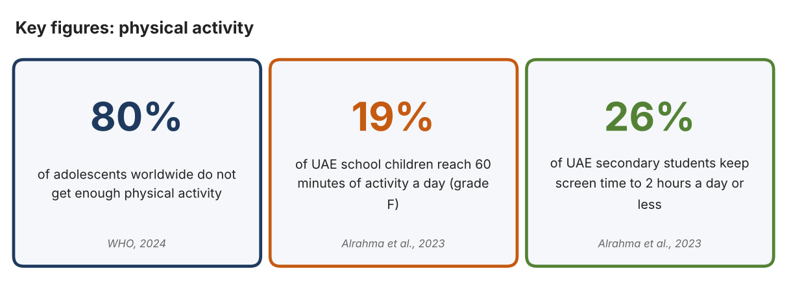
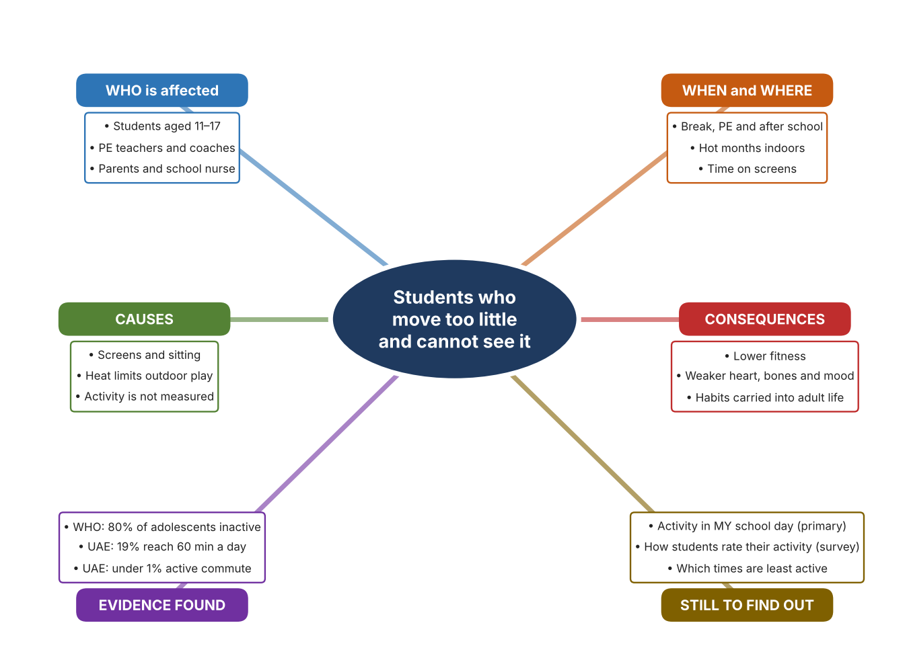
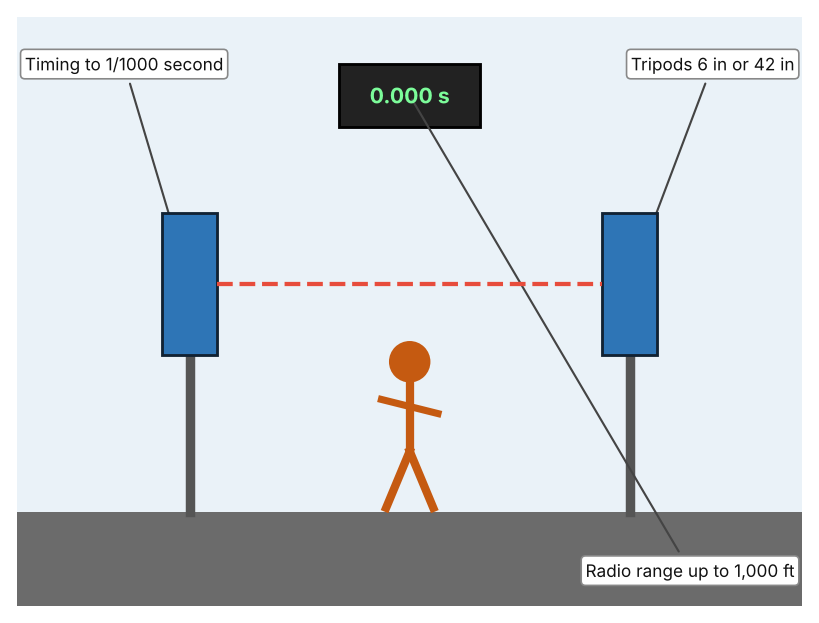
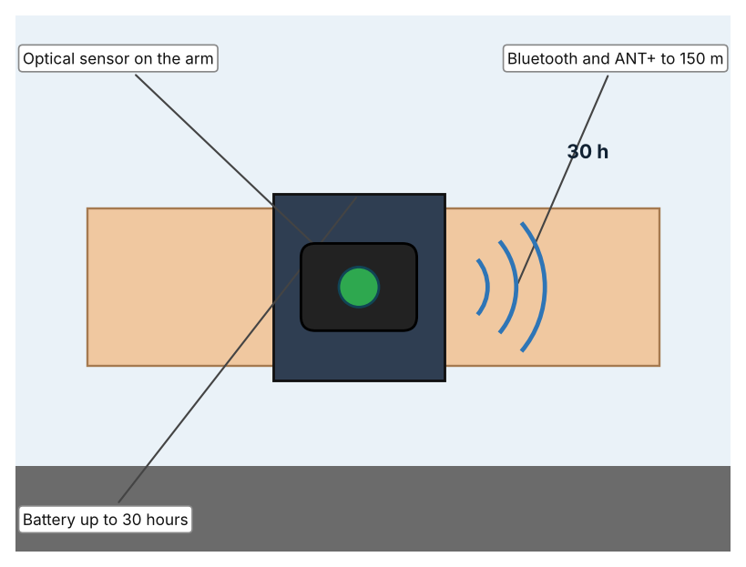
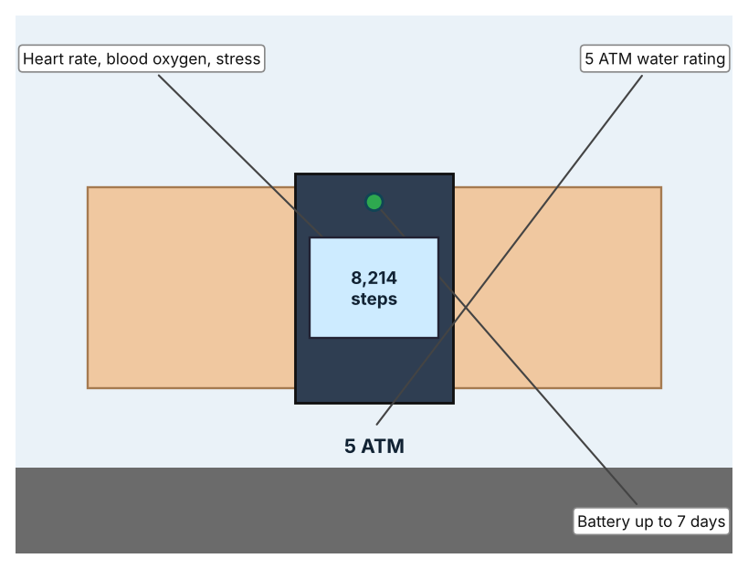

A1 · Design need
Identify and explain the problem faced by your client and community.
My client is the Sports and Wellbeing Committee of a Dubai school, represented by the Head of Sport. The committee knows that many students sit for most of the day and that its fitness lessons are only a small part of the week. It needs students to be more physically active, and it needs the activity of students to be measured in a way that is fair, simple and based on real data.
The people most affected are students aged 11 to 17, because activity in these years shapes fitness, bones and mood. PE teachers and coaches are a second group, because they plan sessions and want proof that they work. Parents and the school nurse are a third group, because they see the effects of low activity on health and energy.
The need is real because most young people do not move enough. The World Health Organization reports that about 80% of adolescents worldwide do not meet recommended levels of physical activity (World Health Organization). The UAE 2022 Report Card found that only 19% of school children reach 60 minutes of moderate to vigorous activity a day, a grade of F, even though all children are taught PE by a specialist; fewer than 1% commute actively, and only 26% of secondary students keep screen time to two hours a day or less (Alrahma et al.). The report describes the country, so I still need to know how active the students at my own school are.
Figure 1 summarises the key numbers. The WHO figure is global and the UAE report covers the whole country, so I treat both as a pattern and not as proof about my school. In my own words: activity is easy to overestimate, because a short PE lesson feels like a lot. Figure 2 is my mind map of the problem.
306 words


A2 · Research plan
Six research questions of different types, each with a priority, a research type and evidence.
| # | Question | Priority | Primary / secondary | Evidence | Brief answer |
|---|---|---|---|---|---|
| 1 | Factual: How many adolescents are not active enough, and why does activity matter? | High | Secondary | WHO fact sheet, 2024 (Appendix A, Source 1) | About 80% of adolescents do not meet recommended levels; activity benefits fitness, heart and metabolic health, bones, thinking and mental health. |
| 2 | Factual: How active are UAE children? | High | Secondary | Alrahma et al., 2023 (Appendix A, Source 2) | 19% reach 60 minutes a day of moderate to vigorous activity (grade F); under 1% commute actively; 26% of secondary students meet the 2-hour screen limit. |
| 3 | Conceptual: How can movement, speed and heart rate be measured? | Medium | Secondary | Brower page (Source 3); Polar page (Source 4); Currys page (Source 5) | Photogates time a runner between two beams; optical sensors read heart rate on the arm; wristbands count steps and heart rate and sync to a phone. |
| 4 | Debatable: Should students' activity be measured by timing gates, by wearable heart-rate sensors, or by fitness bands? | Medium | Secondary | Appendix A, Sources 3, 4 and 5 | Gates give exact times for one event; an armband measures effort but costs more; a band counts the whole day but is less detailed. My view: the best tool depends on the question. |
| 5 | Debatable (challenges my assumption, UAE source): Children taught PE by specialists are active enough, so measuring activity is not needed. | High | Secondary | Alrahma et al., 2023 (Source 2) | All UAE children are taught PE by a specialist, yet only 19% reach 60 minutes a day. Teaching alone is not enough, so measuring what students actually do is needed. |
| 6 | Factual (primary): How active are students at our school during one day, and how do they rate their own activity? | High | Primary | Own activity log and student survey (Appendix A, Sources 6 and 7) | [Student data needed: write the minutes or step counts (with permission) and survey averages, then two sentences on the pattern you see.] |
A3 · Existing products
Three significantly different products, each analysed with ACCESS FM, with pros and cons.
Product 1: Wireless photogate timing system (Brower TC)

Illustration by the author based on the Brower TC Photo-Gate listing, Physioparts (Appendix A, Source 3). [Student: replace with a photo from the source, cited MLA 9]
Product 2: Optical heart-rate armband (Polar Verity Sense)

Illustration by the author based on the Polar Verity Sense listing, Mantel (Appendix A, Source 4). [Student: replace with a photo from the source, cited MLA 9]
Product 3: Fitness band (Garmin Vivosmart 5)

Illustration by the author based on the Garmin Vivosmart 5 entry, Currys (Appendix A, Source 5). [Student: replace with a photo from the source, cited MLA 9]
ACCESS FM analysis
| ACCESS FM | Product 1 | Product 2 | Product 3 |
|---|---|---|---|
| Aesthetics | Two gates on tripods; looks are not described (Physioparts). | Arm sensor pod; styling is not described (Mantel). | Slim band with a screen; described only as a fitness band (Currys). |
| Cost | Price not listed (Physioparts). | About EUR 82.14 (RRP EUR 96.65) (Mantel). | £129.00 (Currys). |
| Customer | Coaches and teachers timing sprints and reactions. | Athletes and students who want heart-rate data on the arm; arm size 23–32 cm. | Individuals who want a day-long record. |
| Environment | Power source is not listed. | Battery up to 30 hours. | Battery up to 7 days. |
| Size | Tripods of 6 in or 42 in; gate size is not listed. | Fits arm circumference of 23–32 cm. | Medium size band; dimensions are not given. |
| Safety | No hazard stated. | WR50 (50 m); the retailer says it is less accurate than a chest strap. | 5 ATM water rating. |
| Function | Wireless timing accurate to a thousandth of a second; supports nine time points. | Optical heart rate; Bluetooth and ANT+. | Sports, steps, distance, calories, sleep, heart rate, blood oxygen and stress; syncs by Bluetooth to a phone. |
| Materials | Materials are not stated. | Materials are not stated. | Materials are not stated. |
Pros and cons
| Product 1 | Product 2 | Product 3 | |
|---|---|---|---|
| Pro | Gives exact times and works wirelessly over a distance. | Reads heart rate without a chest strap and lasts 30 hours. | Tracks a whole day and costs less than a specialist sensor. |
| Con | Measures only speed between gates, not effort or the whole day. | Costs more and is less accurate than a chest strap according to the retailer. | Gives general data and is not designed for exact event timing. |
A4 · Design brief
Restate the need, summarise the research and the existing products, and state the design intent.
My client, the Sports and Wellbeing Committee of a Dubai school, needs students to be more active, with activity measured in a fair, simple way. The problem is real: about 80% of adolescents worldwide do not meet recommended levels (Appendix A, Source 1). In the UAE only 19% of school children reach 60 minutes a day, fewer than 1% commute actively, and only 26% of secondary students meet the screen-time limit (Appendix A, Source 2).
My research shows that low activity continues even where PE is taught by specialists, so teaching alone does not close the gap (Appendix A, Source 2). Activity can be measured in several ways, and each answers a different question (Appendix A, Sources 3, 4 and 5). My debatable questions led me to decide that gates, armbands and bands each cover only part of the problem, and my challenged assumption (that specialist PE is enough) showed me that I need measurements to know what students really do. I will gather my own evidence with the activity log and the survey, always with permission (Appendix A, Sources 6 and 7).
I analysed three very different existing solutions. A wireless photogate system times a runner to a thousandth of a second over up to 1,000 ft, but it measures only speed at one place (Appendix A, Source 3). An optical armband reads heart rate and lasts 30 hours, but it costs more and is less accurate than a chest strap according to the retailer (Appendix A, Source 4). A fitness band tracks steps, heart rate and sleep for a week on one charge, but it gives general data (Appendix A, Source 5). They give me three ideas for inspiration: timing movement, measuring effort, and tracking the whole day. Each has a weakness that another covers.
My design intent is therefore to create a solution that measures students' physical activity and shows it clearly, so that students and teachers can see progress. It must be affordable for a school, easy for students to use, comfortable and safe, and reliable in daily use. I have deliberately not fixed what form it will take. That decision will be made in Criterion B, after I analyse my own log and survey against the evidence in Appendix A.
375 words
Appendix A · Research notes and sources
Secondary sources in MLA 9, with notes and where each source is used.
| # | Source (MLA 9) | Key notes | Used in |
|---|---|---|---|
| 1 | World Health Organization. “Physical Activity.” WHO, 26 June 2024, www.who.int/news-room/fact-sheets/detail/physical-activity. Accessed 21 Oct. 2026. | About 80% of adolescents do not meet recommended levels; benefits include fitness, cardiometabolic health, bone health, cognition and mental health. | A1; A2 Q1; A4. |
| 2 | Alrahma, Ali Muneer, et al. “Results from the United Arab Emirates 2022 Report Card on Physical Activity for Children and Adolescents.” Journal of Exercise Science and Fitness, vol. 21, no. 2, 2023, pp. 218–25, zuscholars.zu.ac.ae/works/5670. Accessed 21 Oct. 2026. | 19% of school children reach 60+ min a day (grade F); under 1% active commute; 26% of secondary students meet the 2 h screen limit; all children taught PE by a specialist. | A1; A2 Q2 and Q5; A4. |
| 3 | “Brower TC Photo-Gate A & B with Tripods.” Physioparts, www.physioparts.co.uk/brower-tc-photo-gate-a-b-with-tripods. Accessed 21 Oct. 2026. | Wireless timing accurate to a thousandth of a second; radio up to 1,000 ft; tripods 6 in or 42 in; nine time points; price, power and size not listed. | A2 Q3 and Q4; A3 Product 1; A4. |
| 4 | “Polar Verity Sense.” Mantel, www.mantel.com/lu/polar-verity-sense. Accessed 21 Oct. 2026. | Optical armband; about EUR 82.14 (RRP EUR 96.65); battery up to 30 h; WR50; Bluetooth and ANT+ up to 150 m; arm 23–32 cm; less accurate than the H10 chest strap. | A2 Q3 and Q4; A3 Product 2; A4. |
| 5 | “Fitness Trackers (Garmin Vivosmart 5, Black, Medium).” Currys, www.currys.co.uk/products/garmin-vivofit-jr.-3-kids-activity-tracker-black-cosmic-universal-10240851.html. Accessed 21 Oct. 2026. | Vivosmart 5: £129.00; battery up to 7 days; 5 ATM; heart rate, blood oxygen, stress; sports, steps, distance, calories and sleep; Android and iOS. | A2 Q3 and Q4; A3 Product 3; A4. |
| 6 | Primary: daily activity log, completed by the student on [date]. Accessed own data. | [Student: summarise your counts.] | A2 primary question; A4. |
| 7 | Primary: survey of [number] people, completed on [date]. | [Student: summarise your averages.] | A2 primary question; A4. |
Primary research instrument 1: daily activity log
Student records activity for one school day with permission, using a pedometer, a phone step counter or a stopwatch.
| Part of day | Activity | Minutes active | Steps (if known) | Effort (low/medium/high) | Notes |
|---|---|---|---|---|---|
| Before school | |||||
| Break | |||||
| PE lesson | |||||
| After school |
Primary research instrument 2: survey
Rate each statement from 1 (strongly disagree) to 5 (strongly agree). Collect responses with permission and record no names.
| Statement | 1 | 2 | 3 | 4 | 5 | Total responses |
|---|---|---|---|---|---|---|
| I am active for at least 60 minutes on most days. | ||||||
| I spend more time sitting than moving on a school day. | ||||||
| Seeing my activity numbers would encourage me to move more. | ||||||
| The heat stops me from being active outdoors. |